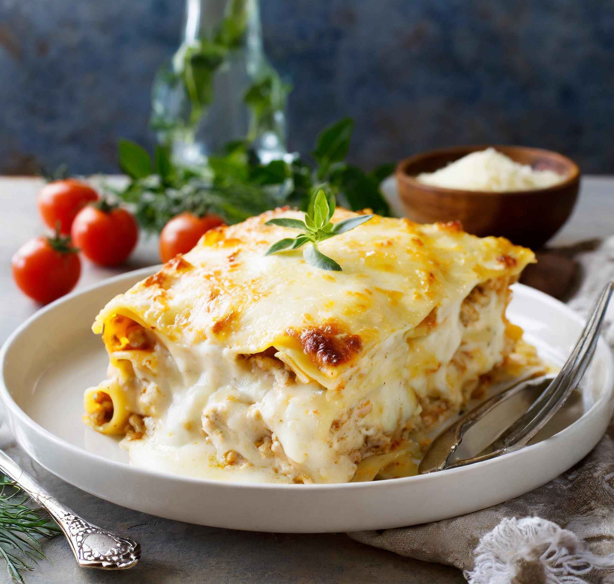

Receita de Lasanha de Frango com Cream Cheese
Esta lasanha de frango com cream cheese é uma opção deliciosa para uma refeição reconfortante e saborosa. Camadas de massa de lasanha, frango desfiado, molho de tomate e cream cheese cremoso se unem para criar um prato irresistível que toda a família vai adorar!
Ingredientes:
- 500g de peito de frango cozido e desfiado
- 1 pacote de massa para lasanha pré-cozida
- 1 cebola picada
- 2 dentes de alho picados
- 1 lata de molho de tomate
- 200g de cream cheese
- 200g de queijo muçarela ralado
- Azeite de oliva, sal e pimenta a gosto
Modo de Preparo:
- Em uma panela, aqueça o azeite e refogue a cebola e o alho até ficarem dourados.
- Adicione o frango desfiado e refogue por alguns minutos. Tempere com sal e pimenta a gosto.
- Despeje o molho de tomate na panela e deixe cozinhar por mais alguns minutos.
- Em uma travessa refratária, faça uma camada de molho de frango.
- Coloque uma camada de massa para lasanha por cima do molho.
- Cubra a massa com uma camada de cream cheese e polvilhe com queijo muçarela ralado.
- Repita as camadas até acabarem os ingredientes, terminando com uma camada de queijo por cima.
- Leve ao forno preaquecido a 180°C por cerca de 30 minutos, ou até que o queijo esteja derretido e dourado.
- Retire do forno, deixe repousar por alguns minutos e sirva em seguida. Aproveite sua deliciosa lasanha de frango com cream cheese!